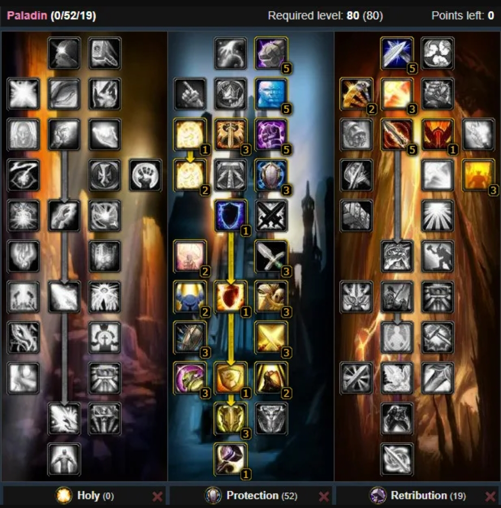

Paladín Protección
Guía PvE 3.3.5
📊 Estadísticas prioritarias (PvE)
- Defensa – Cap 540 skill (689 rating) para inmunidad a críticos
- Pericia – Soft cap 26 (214 rating), hard cap 56 (460 rating)
- Golpe – Cap 263 rating (230 con Draenei) para 8% evitar misses
- Vigor – Supervivencia y EHP principal
- Armadura – Cap 49905 para 75% reducción física
- Valor de Bloqueo / Rating de Bloqueo – Mitigación y amenaza
- Esquiva / Parada – Avoidance secundario
- Fuerza – Amenaza, block value y spell power
🔧 Talentos & Glifos
- Talentos: Build estándar 0/52/19 (Escudo Sagrado, Defensor Ardiente, Martillo del Honrado) o 0/53/18 para más utilidad.

- Glifo Mayor: Súplica Divina (obligatorio, -3% daño), Sello de Venganza (+10 pericia), Defensa Recta
- Glifo Menor: Captar No-Muertos, Imposición de Manos, Bendición de Reyes
✨ Encantamientos recomendados (PvE)
- Cabeza: Arcanum del adepto protector
- Hombros: Inscripción del pináculo superior
- Capa: Armadura poderosa
- Pecho: Supersalud
- Brazales: Aguante sublime
- Guantes: Armero
- Piernas: Armadura para pierna de pellejo de escarcha
- Pies: Vitalidad colmillarr
- Anillos: +Aguante (x2)
- Arma: Mangosta
- Escudo: Aguante sublime o Blindaje de titanio
💎 Gemas (PvE)
- Meta: Diamante de asedio de tierra austero (+32 Vigor, +2% armadura)
- Rojas: Piedra del terror guardiana (+Pericia/Vigor)
- Amarillas: Ojo de Zul duradero (+Defensa/Vigor) o vívido (+Golpe/Vigor)
- Azules: Circón majestuoso sólido (+Vigor)
- Prismáticas: Ópalo crepuscular soberano (+Fuerza/Vigor)
⚔️ Habilidades PvE clave
- Escudo Sagrado – Bloqueo y amenaza principal.
- Escudo del Vengador – Opener y cooldown clave.
- Escudo de Rectitud – Filler single target.
- Martillo del Honrado – AoE threat.
- Consagración – AoE ground effect.
- Sentencia de Sabiduría – Mana y amenaza.
- Cólera Vengativa – Burst threat cooldown.
🔁 Rotación básica PvE (Single Target)
- Pre-pull: Furia Justa, Sello de Venganza, Escudo Sagrado.
- Escudo del Vengador para opener.
- Sentencia de Sabiduría en cooldown.
- Consagración / Martillo del Honrado en cooldown.
- Escudo de Rectitud como filler.
- Martillo de Cólera <20% HP.
AoE: Sello de Orden, prioriza Consagración después de Escudo Sagrado. Rotación 6-8-6.
💡 Consejos PvE
- Caps primero: Defensa 540, Pericia 26 (hard 56), Golpe 8%.
- Mantén Escudo Sagrado siempre up.
- Usa cooldowns defensivos (Defensor Ardiente, Guardián Divino) en daño heavy.
- Proporciona Aura de Devoción al raid.